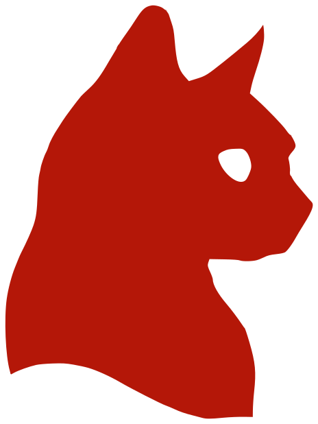

Portitor ullamcorper
Aenean ornare velit lacus, ac varius enim lorem ullamcorper dolore. Proin aliquam facilisis ante interdum. Sed nulla amet lorem feugiat tempus aliquam.

Q-ScienceBem-vindo ao meu espaço acadêmico. Aqui compartilho meus estudos, reflexões e futuras pesquisas
Criar um website acadêmico é uma prática bem-vista no exterior: funciona como uma vitrine do nosso trabalho. Construí este espaço para ir além dos resultados técnicos e compartilhar um pouco da minha jornada, ou melhor, da minha aventura: na pós-graduação. Atualmente, estou no processo seletivo do mestrado em Física na UFPE (e, como não poderia deixar de ser, na torcida por uma bolsa). Sinta-se à vontade para explorar o site!

Minhas principais áreas de interesse são:
Aenean ornare velit lacus, ac varius enim lorem ullamcorper dolore. Proin aliquam facilisis ante interdum. Sed nulla amet lorem feugiat tempus aliquam.
Aenean ornare velit lacus, ac varius enim lorem ullamcorper dolore. Proin aliquam facilisis ante interdum. Sed nulla amet lorem feugiat tempus aliquam.
Aenean ornare velit lacus, ac varius enim lorem ullamcorper dolore. Proin aliquam facilisis ante interdum. Sed nulla amet lorem feugiat tempus aliquam.
Aenean ornare velit lacus, ac varius enim lorem ullamcorper dolore. Proin aliquam facilisis ante interdum. Sed nulla amet lorem feugiat tempus aliquam.
Sou Willian Bonner, ou "Jimi", bacharel em Física pela Universidade Federal de Sergipe (UFS). Minha trajetória acadêmica integra, à formação física, uma sólida base em matemática pura com ênfase em Análise Real e Geometria Diferencial, complementada por disciplinas avançadas do curso de Matemática e quatro iniciações científicas, nas quais utilizei o sistema de álgebra computacional Maxima para calcular propriedades geométricas e o operador de Laplace-Beltrami em espaços curvos. No Trabalho de Conclusão de Curso, explorei a dinâmica não-linear de lasers por meio das equações de taxa e do sistema de Maxwell-Bloch, identificando regimes caóticos via simulações numéricas em Python. Meu foco atual está na interseção entre geometria de variedades, Mecânica Quântica, Relatividade Geral e métodos teórico-computacionais aplicados à Física-Matemática.
.png)
Olá visitante, para entrar em contato comigo, basta me enviar um email. Responderei assim que possível!